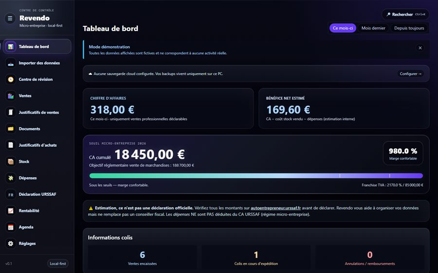

Étudiant en réorientation vers l'informatique appliquée, je construis des projets
concrets autour du développement, des applications utiles, du jeu vidéo et des outils
numériques. Je recherche une alternance pour progresser dans un cadre professionnel et
contribuer à des projets réels.
Construire pour apprendre, apprendre en construisant.
Je suis étudiant en réorientation vers l'informatique appliquée. Mon
objectif est clair : progresser dans un cadre professionnel et participer à des projets
réels, plutôt que de rester sur la théorie.
Je suis pré-admis en BUT Réseaux & Télécommunications en apprentissage
à partir de septembre 2026, sous réserve de la signature d'un contrat. Je recherche une
alternance en support informatique, systèmes & réseaux, support applicatif ou
développement.
J'aime créer des outils utiles, concrets et publiables : la plupart de mes
projets partent d'un vrai besoin et finissent en ligne. Je suis à l'aise sous
Linux Debian et en ligne de commande.
Je gère aussi une micro-entreprise de revente, ce qui m'a donné le goût de
l'organisation, de l'autonomie et des outils numériques — au point d'en faire une
application complète, Revendo.
02 — Projets
Des projets que j'utilise, pas seulement que j'ai codés.
Une sélection orientée concret : un vrai outil métier, un projet d'équipe ambitieux, et des applications publiées.
Projet principal

Revendo
BETA · usage quotidien
Revendo est une application que j'ai développée pour répondre à un besoin réel : mieux
gérer mon activité de revente. Elle me sert au quotidien pour suivre le chiffre
d'affaires, le stock, les ventes, les dépenses et la rentabilité. La version publique
utilise uniquement des données fictives afin de préserver la
confidentialité de mon activité.
Sanity Junction est un visual novel psychologique développé en équipe avec Ren'Py/Python.
Le projet est actuellement en développement actif et vise une publication commerciale.
Pour respecter la confidentialité de l'équipe, seuls certains éléments techniques et une
démo limitée sont présentés publiquement.
Outil CLI Python pour analyser localement un export Google Photos Takeout et repérer
fichiers volumineux, doublons et médias optimisables — local, testé, documenté.
Projet étudiant développé en C++ avec Grapic, puis adapté en version web jouable et en
version native portable — un projet académique transformé en projet publiable.
Pré-admis en apprentissage, sous réserve de la signature d'un contrat.
2023 – 2026
L1 Mathématiques – Informatique
Université Claude Bernard Lyon 1
Parcours de réorientation vers une formation plus concrète et professionnalisante en informatique.
2023
Baccalauréat général
Lycée Albert Camus — spécialités Mathématiques & Physique
Expérience
Depuis mars 2026
Micro-entrepreneur — e-commerce / achat-revente
Autonomie, organisation et relation client. Un besoin réel qui a mené au développement de Revendo.
2024 – 2026
Missions d'intérim — Supplay
Surveillance d'examens, restauration, préparation de commandes : rigueur, ponctualité, respect des consignes.
2023 – 2025
Grande distribution — Auchan / Intermarché
Mise en rayon, caisse, accueil client : fiabilité, adaptation et relation client.
05 — Contact
Discutons d'une alternance.
Disponible pour une alternance à partir de septembre 2026 en support informatique, systèmes & réseaux, support applicatif ou développement. N'hésitez pas à me contacter.